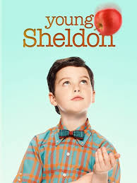

GENRE : SUPERNATURAL
Vampire Diaries(2009-2017)
After centuries of quarreling, Stefan and Damon Salvatore return to their original town of Mystic Fall Virginia. Stefan, the selfless, brave, guilt ridden brothers meets a high school girl named Elena Gilbert who he instantly falls in love with. While Damon the gorgeous, dangerous, and selfish vampire is after his brothers girl to pay him back for making him turn into a vampire in 1864.
It follows the life of Elena Gilbert (Nina Dobrev), a teenage girl who has just lost both parents in a car accident, as she falls in love with a 162-year-old vampire named Stefan Salvatore (Paul Wesley).Both brothers protect Elena as they face various villains and threats to their town, including Katherine.
Genres : Drama,Fantasy,Horror,Mystery,Romance,Thriller
No. of Seasons: 8
Available on Amazon Prime
The Originals(2013-2018)
A spin-off from The Vampire Diaries and set in New Orleans, The Originals centers on the Mikaelson siblings, otherwise known as the world's original vampires: Klaus (Joseph Morgan), Elijah (Daniel Gillies), and Rebekah (Claire Holt). Now Klaus must take down his protégé, Marcel (Charles Michael Davis), who is now in charge of New Orleans, in order to re-take his city, as he originally built New Orleans. Klaus departed from the city after being chased down by his father Mikael, while it was being constructed and Marcel took charge. As Klaus has returned after many years, his ego has provoked him to become the king of the city. "Every King needs an heir" says Klaus, accepting the unborn child. The child is a first to be born to a hybrid (part vampire, part werewolf) and a werewolf (Hayley).
Genres : Drama,Fantasy,Horror,Mystery,Romance,Thriller
No. of Seasons: 5
Available on Amazon Prime and Netflix
Supernatural(2005-2020)
This television drama is about the two Winchester brothers, Sam and Dean, who were raised by their father, John, to hunt and kill all things that go "bump in the night" after his wife, Mary, was murdered by an evil supernatural being when the boys were young. 22 years later the brothers set out on a journey, fighting evil along the way, to find their recently missing father who, when they finally meet up with, reveals he knows what killed their mother, a demon and has found a way to track and kill it. Meanwhile, Sam starts to develop frightening abilities that include death visions, visions of people dying before it actually happens. These visions are somehow connected to the demon who murdered his mother and its mysterious plans that seem to be all about Sam. When their father dies striking a deal with the very same devil that had killed his wife, the brothers, now alone and without their mentor, are determined to finish the crusade their father started. But disturbing revelations about Sam's part in the demon's apocalyptic plans are presented when John's dying last words to Dean are revealed
Genres : Drama,Fantasy,Horror,Mystery,Thriller
No. of Seasons: 15
Available on Amazon Prime
Legacies(2018- )
Continuing the tradition of The Vampire Diaries and The Originals, the story of the next generation of supernatural beings at The Salvatore School for the Young and Gifted. Klaus Mikaelson's daughter, 17-year-old Hope Mikaelson; Alaric Saltzman's twins, Lizzie and Josie Saltzman; and other young adults come of age in the most unconventional way possible, nurtured to be their best selves...in spite of their worst impulses
Genres : Teen Drama,Fantasy,Romance,Mystery,Thriller
No. of Seasons: 3
Available on Amazon Prime
Shadowhunters: The Mortal Instruments(2016-2019)

Clary Fray is a normal teenager living in Brooklyn with her mother. One day, she discovers that she is descended from a line of Shadowhunters; humans born with angelic blood that fight to protect our world from demons. After her mother is kidnapped, Clary must team up with three Shadowhunters: Jace, Alec and Isabelle and her best friend Simon on a quest to find her mother and recover her past.
Genres : Drama,Fantasy,Romance,Action
No. of Seasons: 4
Available on Netflix
GENRE : SUPERHERO FICTION
The Flash(2014- )

Barry Allen is a Central City police forensic scientist with a reasonably happy life, despite the childhood trauma of a mysterious red and yellow lightning killing his mother and framing his father. All that changes when a massive particle accelerator accident leads to Barry being struck by lightning in his lab. Coming out of coma nine months later, Barry and his new friends at S.T.A.R labs find that he now has the ability to move at superhuman speed. Furthermore, Barry learns that he is but one of many affected by that event, most of whom are using their powers for evil. Determined to make a difference, Barry dedicates his life to fighting such threats, as The Flash. While he gains allies he never expected, there are also secret forces determined to aid and manipulate him for their own agenda.
Genres : Action,Adventure,Drama,Sci-fi
No. of Seasons: 6
Available on Disney+Hotstar
Arrow(2012-2020)
Oliver Queen and his father are lost at sea when their luxury yacht sinks, apparently in a storm. His father dies, but Oliver survives for five years on an uncharted island and eventually returns home. But he wasn't alone on the island where he learned not only how to fight and survive but also of his father's corruption and unscrupulous business dealings. He returns to civilization a changed man, determined to put things right. He disguises himself with the hood of one of his mysterious island mentors, arms himself with a bow and sets about hunting down the men and women who have corrupted his city.
Genres : Action,Crime,Adventure,Drama,Sci-fi
No. of Seasons: 8
Available on Netflix
Supergirl(2015-)

Years ago, Krypton was about to explode and Kal-El was sent to Earth to escape that fate. However, his older cousin, Kara, was also intended to accompany the infant as his protector. Unfortunately, Kara was accidentally diverted into the timeless Phantom Zone for years before finally arriving on Earth decades later and found by her cousin who had grown into Superman. Years later, Kara Danvers is a young professional adrift in a thankless job until a fateful crisis ignites a sense of purpose using Kryptonian powers she had long hidden. Inspired, Kara decides to emulate her cousin's superheroic ways, only to find her foster sister introducing her to the secret Department of Extra-Normal Operations, dedicated to fighting alien menaces including those Kara inadvertently led to Earth. Now with such help, the Maid of Might takes her place as Earth's newest champion with new friends and enemies challenging her world.
Genres : Action,Adventure,Drama,Sci-fi
No. of Seasons: 5
Available on Netflix
The Gifted(2017-2019)

The Gifted focuses on a suburban couple (Stephen Moyer, Amy Acker) whose ordinary lives are rocked by the sudden discovery that their children possess mutant powers. Forced to go on the run from a hostile government, the family joins up with an underground network of mutants and must fight to survive.
Genres : Action,Fantasy,Drama,Sci-fi
No. of Seasons: 2
Available on Disney+hotstar
Iron Fist(2017-2018)

Danny Rand returns to New York City after being missing for years, trying to reconnect with his past and his family legacy. He fights against the criminal element corrupting his world around him with his incredible kung-fu mastery and ability to summon the awesome power of the fiery Iron Fist.
Genres : Action,Crime,Fantasy,Drama,Sci-fi
No. of Seasons: 2
Available on Netflix
GENRE : SITECOM (SITUATIONAL COMEDY)
Friends(1994-2004)

Rachel Green, Ross Geller, Monica Geller, Joey Tribbiani, Chandler Bing and Phoebe Buffay are six 20 something year-olds, living off of one another in the heart of New York City. Over the course of ten years, this average group of buddies goes through massive mayhem, family trouble, past and future romances, fights, laughs, tears and surprises as they learn what it really means to be a friend. Though the series is 35 years old, it is still loved by people of all age groups all over world.
Genres : Comedy, Romance
No. of Seasons: 10
Available on Netflix
Big Bang Theory(2007-2019)

Leonard Hofstadter and Sheldon Cooper are both brilliant physicists working at Cal Tech in Pasadena, California. They are colleagues, best friends, and roommates, although in all capacities their relationship is always tested primarily by Sheldon's regimented, deeply eccentric, and non-conventional ways. They are also friends with their Cal Tech colleagues mechanical engineer Howard Wolowitz and astrophysicist Rajesh Koothrappali. The foursome spend their time working on their individual work projects, playing video games, watching science-fiction movies, or reading comic books. As they are self-professed nerds, all have little or no luck with women. When Penny, a pretty woman and an aspiring actress from Omaha, moves into the apartment across the hall from Leonard and Sheldon's, Leonard has another aspiration in life, namely to get Penny to be his girlfriend.
Genres : Comedy, Romance
No. of Seasons: 12
Available on Netflix and Amazon Prime
Young Sheldon(2017- )

It's 1989 and 9-year-old Sheldon Cooper has skipped four grades to start high school along with his less-intellectual older brother. As he struggles to be understood by his family, classmates and neighbours, his mother arms him with the best tool she can come up with: reminding bullies his dad is the football coach and his brother is on the team. His twin sister doesn't share his exceptional mind, but she has a much clearer vision of what life has in store for the young genius. Jim Parsons, who plays the adult version of Sheldon on "The Big Bang Theory (2007)"
Genres : Comedy
No. of Seasons: 3
Available on Amazon Prime
Black-ish(2014- )

Black-ish follows an upper middle class African-American family led by Andre 'Dre' Johnson (Anthony Anderson) and Rainbow Johnson (Tracee Ellis Ross). The show revolves around the family's lives, as they juggle several personal and sociopolitical issues. The show also features the characters Zoey Johnson (Yara Shahidi), Andre Johnson, Jr. (Marcus Scribner), Jack Johnson (Miles Brown), and Diane Johnson (Marsai Martin).
Genres : Comedy
No. of Seasons: 6
Available on Disney+hotstar
Grown-ish(2018- )

Grown-ish is a spin-off show of Black-ish.A contemporary take on the current issues facing both students and administrators in the world of higher education. Yara Shahidi portrays Zoey - Dre (Anthony Anderson) and Rainbow's (Tracee Ellis Ross) popular, entitled, stylish and socially active 17-year-old daughter - as she heads off to college and quickly discovers that not everything goes her way once she leaves the nest.
Genres : Comedy
No. of Seasons: 2
Available on Disney+hotstar
GENRE : MYSTERY
Sherlock(2010- )

In this modernized version of the Conan Doyle characters, using his detective plots, Sherlock Holmes lives in early 21st century London and acts more cocky towards Scotland Yard's detective inspector Lestrade because he's actually less confident. Doctor Watson is now a fairly young veteran of the Afghan war, less adoring and more active
Genres : Crime,Drama,Thriller
No. of Seasons: 4
Available on Netflix
13 Reasons Why(2017- )
Based on Caroline Kepnes' best-selling novel of the same name, YOU is a 21st century love story that asks, "What would you do for love?" When a brilliant bookstore manager crosses paths with an aspiring writer, his answer becomes clear: anything. Using the internet and social media as his tools to gather the most intimate of details and get close to her, a charming and awkward crush quickly becomes obsession as he quietly and strategically removes every obstacle - and person - in his way.
Genres : Drama,Thriller
No. of Seasons: 3
Available on Netflix
Elite(2018- )
Las Encinas is the most exclusive school in the country- where the Elite sends their children to study. In there, three working-class teens have just been admitted after an earthquake destroyed their school. The clash between those who have everything and those who have nothing to lose creates a perfect storm that ends in a murder. Who committed the crime?
Genres : Crime,Drama,Thriller
No. of Seasons: 3
Available on Netflix
Bosch(2014- )

Harry Bosch is an irreverent homicide detective in Los Angeles. Like any good protagonist he has problems with authority, follows his gut and bends a few rules while achieving the best solved case rate in all of California. Whatever situations the writers put him into he will undoubtedly be entertaining as he pursues justice.
Genres : Crime,Drama,Thriller
No. of Seasons: 5
Available on Amazon Prime
The Mentalist(2008-2015)
Patrick Jane is a crime consultant with the California Bureau of Investigation. He has a particular gift for astute observation and reading people, honed through years of being a faux psychic. His gift makes him brilliant at solving murders, which is why the CBI have him around. However, his motive for taking on the role is purely one of revenge: find and kill the man who killed his wife and daughter
Genres : Crime,Drama,Thriller
No. of Seasons: 7
Available on Amazon Prime
GENRE : MEDICAL DRAMA
House M.D.(2004-2012)

In this modernized version of the Conan Doyle characters, using his detective plots, Sherlock Holmes lives in early 21st century London and acts more cocky towards Scotland Yard's detective inspector Lestrade because he's actually less confident. Doctor Watson is now a fairly young veteran of the Afghan war, less adoring and more active
Genres : Mystery,Drama
No. of Seasons: 8
Available on Amazon Prime and Netflix
Grey's Anatomy(2005- )

A medical based drama centered around Meredith Grey, an aspiring surgeon and daughter of one of the best surgeons, Dr. Ellis Grey. Throughout the series, Meredith goes through professional and personal challenges along with fellow surgeons at Seattle Grace Hospital.
Genres : Drama,Romance
No. of Seasons: 16
Available on Amazon Prime and Netflix
The Resident(2018- )
It centers on an idealistic young doctor who begins his first day under the supervision of a tough, brilliant senior resident who pulls the curtain back on all of the good and evil in modern day medicine. Lives may be saved or lost, but expectations will always be shattered.
Genres : Drama,Romance
No. of Seasons: 3
Available on Amazon Prime
The Good Doctor(2017- )
It centers on an idealistic young doctor who begins his first day under the supervision of a tough, brilliant senior resident who pulls the curtain back on all of the good and evil in modern day medicine. Lives may be saved or lost, but expectations will always be shattered.
Genres : Drama
No. of Seasons: 3
Available on Amazon Prime and Disney+hotstar
GENRE : LEGAL DRAMA
Suits(2011-2019)

While running from a drug deal gone bad, brilliant young college dropout Mike Ross slips into a job interview with one of New York City's best legal closers, Harvey Specter. Tired of cookie-cutter law-school grads, Harvey takes a gamble by hiring Mike on the spot after recognizing his raw talent and photographic memory. Mike and Harvey are a winning team. Although Mike is a genius, he still has a lot to learn about law; and while Harvey might seem like an emotionless, cold-blooded shark, Mike's sympathy and concern for their cases and clients will help remind Harvey why he went into law in the first place. Mike's other allies in the office include the firm's best paralegal Rachel and Harvey's no-nonsense assistant Donna. Proving to be an irrepressible duo and invaluable to the practice, Mike and Harvey must keep their secret from everyone including managing partner Jessica and Harvey's archnemesis Louis, who seems intent on making Mike's life as difficult as possible.
Genres : Comedy,Drama
No. of Seasons: 8
Available on Netflix
For the People(2018-2019)

Set in the Southern District of New York (SDNY) Federal Court, aka "The Mother Court," the legal drama follows brand new lawyers working for both the defense and the prosecution as they handle the most high profile and high stakes cases in the country - all as their personal lives intersect
Genres : Drama
No. of Seasons: 2
Available on Disney+hotstar
How To Get Away With Murder(2014- )

A group of ambitious law students and their brilliant criminal defense professor become involved in a twisted murder plot that promises to change the course of their lives.Annalise Keating. For her students, she's a great teacher. And every year, she selects four of them to work with her as lawyers. But this year, when everyone arrives at school in the first day, Lila Stangard, a young girl, is already missing. They dont know it, but the life of everyone close to Annalise's office is going to fall into a dark and unending series of murders.
Genres : Crime,Drama,Mystery,Thriller
No. of Seasons: 6
Available on Netflix
GENRE : TEEN DRAMA
Gossip Girl(2007-2012)
Gossip Girl follows the lives of privileged teenagers on the upper east side. Serena Van Der Woodsen is a blonde and beautiful socialite. Everyone knows Serena. Blair Waldorf is Serena's best friend but it's always about Serena not Blair. Nate Archibald is Blair's boyfriend but ever since Serena came back from boarding school Nate has been acting strange. Chuck Bass is a rich and arrogant person. Daniel Humphrey, a lonely boy from Brooklyn, NY, who nobody knows. Follow the lives of this guilty pleasure show
Genres : Drama,Romance
No. of Seasons: 5
Available on Netflix
All Americans(2018- )
Inspired by the true life story of NFL Superbowl Champion, Spencer Paysinger, All American is an inspiring, ensemble family drama about a young, high school football phenom, Spencer James and the two families whose homes he shares after transferring from Crenshaw to Beverly High - his mother and brother in South Central LA and the Bakers of Beverly Hills. But as these two families and their vastly different worlds are drawn together, Spencer, the Bakers, and the James family will discover that the differences that divide us on the surface hide a deeper connection - the complicated, imperfect humanity that unites us all.
Genres : Drama,Sports,Romance
No. of Seasons: 2
Available on Amazon Prime
Never Have I Ever(2020- )

After a traumatic year, an Indian-American teen just wants to spruce up her social Status - but friends, family and feeling won't make it easy for her.Inspired by Mindy Kaling's own childhood being a modern day 1st generation Indian-American.
Genres : Drama,Comedy
No. of Seasons: 1
Available on Netflix
Step Up : High Water(2018-2019)
Step Up: High Water follows the students and faculty of "High Water, Atlanta’s most cutthroat performing arts school. When twins Tal and Janelle relocate from Ohio, they find themselves thrust into a world where every move is a test. As they attempt to navigate their new world— on and off the dance floor— they’ll discover just how deep they’re willing to dig to realize their dreams and seize their moment.
Genres : Dance,Drama,Music
No. of Seasons: 1
Available on Youtube Premium
One Tree Hill(2003-2012)

The lives of brothers Nathan and Lucas Scott as they travel through high school and college. The two brothers face among their friends the ups and downs of relationships and friendships. The pain of lose and love. The joy in family and friends. Lucas and Nathan do not start on the best of terms but through many hard times and struggles find the best in each other. Marriage, divorce, break-ups, birth, and death play a huge role.
Genres : Drama,Romance,Sports
No. of Seasons: 9
Available on Amazon Prime